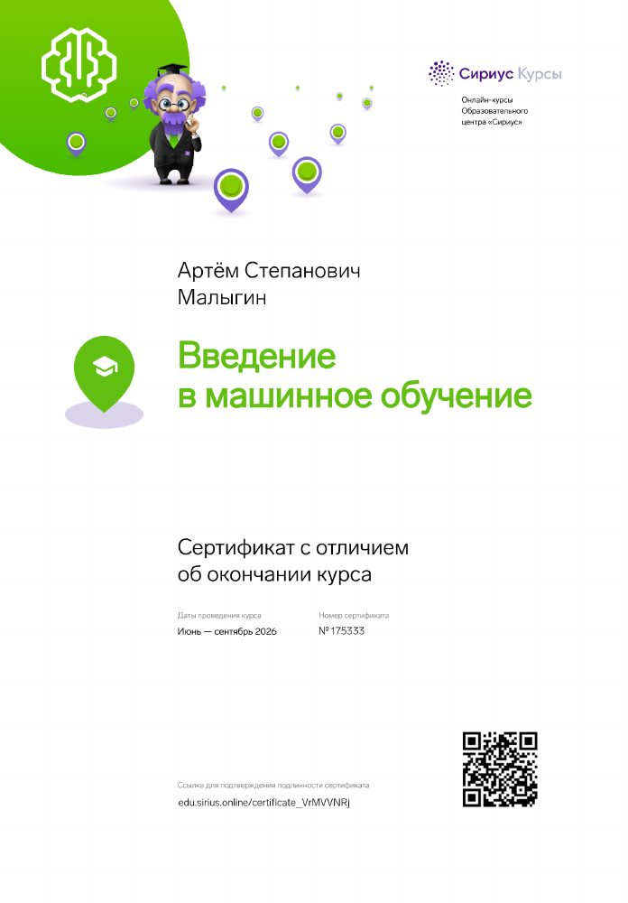
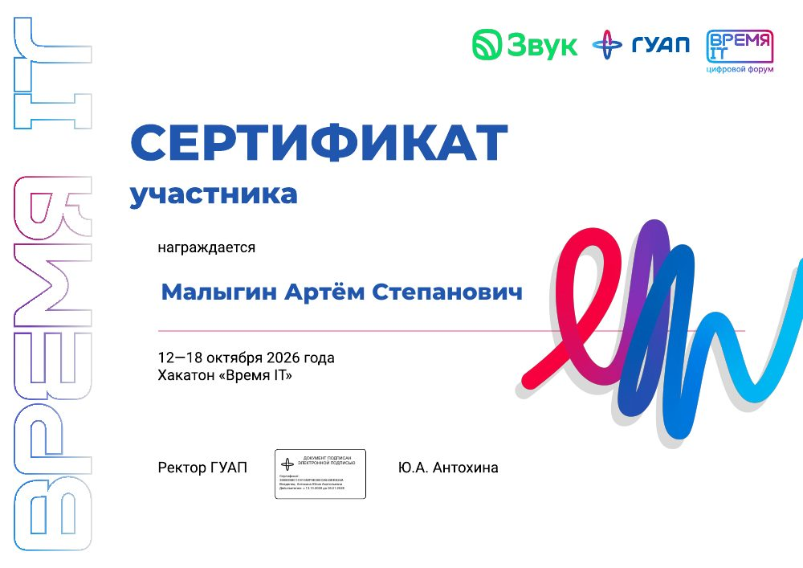
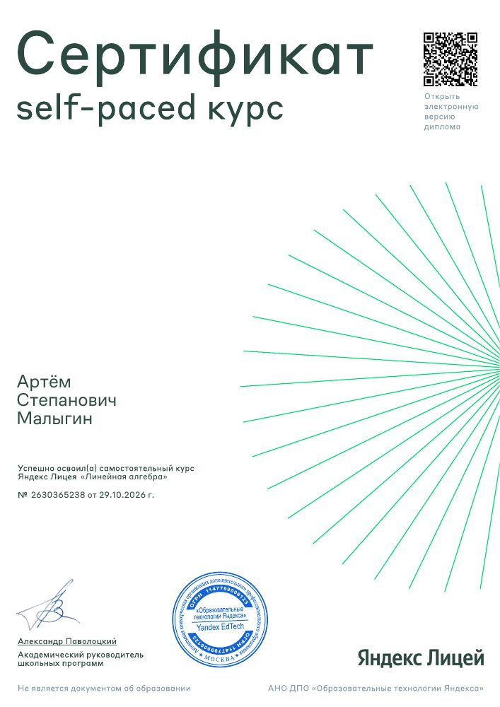

06Достижения и сертификаты

Введение в машинное обучение
Образовательный центр «Сириус» · июнь–сентябрь 2026 · с отличием

Хакатон «Время IT»
ГУАП · 12–18 октября 2026 · участник

Джем «ЮниГеймЛаб 1.2»
НГУАДИ · 1–3 октября 2025 · команда Drunk Wizard Studio

«Ты — опора: лидерство в IT-команде»
Центр компетенций ГУАП · 22 октября 2026
HTML и CSS: шаг за шагом
Яндекс Лицей · 19.09.2026
JavaScript: шаг за шагом
Яндекс Лицей · 26.09.2026
SQL: шаг за шагом
Яндекс Лицей · 12.10.2026

Линейная алгебра
Яндекс Лицей · 29.10.2026